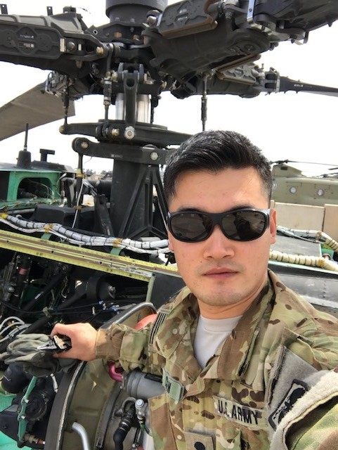
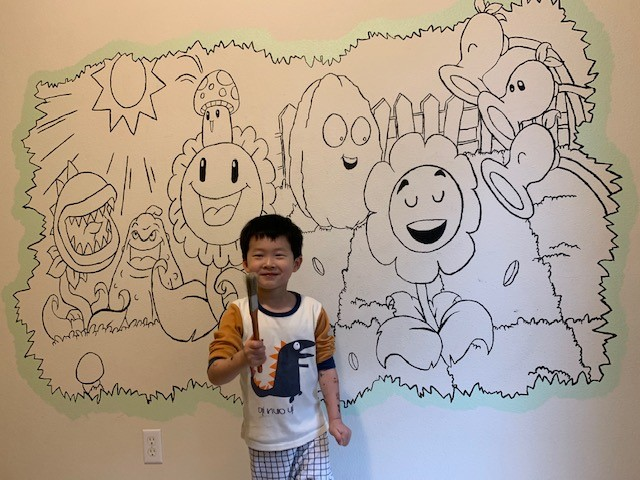
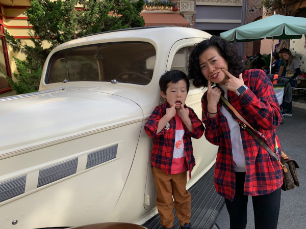

Hi my name is Peng Chen. My superpowers are learning new things and fixing technical and business
problems. My story starts in 2009 when I emigrated to America from China to learn how
America works (greatest country/very different from China).
At that time, I had just finished my Bachelors in Business Administration and Agronomy
and Crop Science. Because I wanted to learn about America, I chose to pursue a Masters
of Public Administration.
After I finished my schooling, I was offered a position as a Loan Processor. A year
later I was promoted into a customer-facing position as a Home Mortgage Consultant.
I excelled at understanding customers’ needs and their qualifications, matching them to
lenders’ requirements, and ensuring their loan applications can get fast and smooth process.
4 years later, I decided I wanted to serve the country I now called “home”, and, as a side
bonus, I was offered a really cool job learning to maintain the Apache Attack Helicopter.
During my time as an Apache Mechanic, I lead a team that maintained Apache’s responsible
for the liberation of Mosul city in 2017. My work included working 13 hour days, 6 days a
week, completely disassembling, inspecting, and reassembling Apache aircraft.

When I returned from Iraq, I was offered the opportunity to work as a system admin to
maintain daily operations for the Apache logbook & logistics software system. During this
time, I taught myself to pull data from SQL and automated reporting that enabled Apache
commanders to proactively track maintenance – saving technicians hours manually pulling
the data every day.
After leaving the Army, I decided to pursue my passion for IT. I applied and was accepted
into the MSSA Server and Cloud Administration program. During my time with MSSA, I’ve really
enjoyed learning about scripting with PowerShell and using PowerShell to automate the deployment
of different kinds of resources to Azure. I also earned my CCNA Routing and Switching
certification.
In my downtime, I enjoy learning to be handy with YouTube. Over the years, YouTube has
taught me how to remodel my kitchen, bathroom, floors, build a backyard deck, build a pond,
fix my dad’s cars, fix laptops, edit movies, and painting on the wall to make my kid happy.
 
My top 10 favorite movies